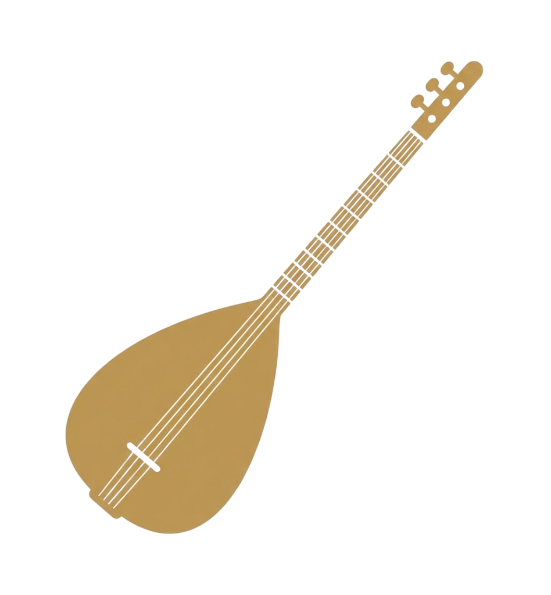

Neden Online Eğitim?
Yapay Zeka ile Eğitim
Yapay zeka destekli müzik öğretmeniniz BurakAI ile eğitimde yeni bir dönem. Bu teknolojiyi kullanmak ve derslerinize entegre etmek için aşağıdaki formu doldurarak ders paketlerimizi satın alabilirsiniz.
Mesai Sonrası Sanat
Çoğu kurs akşam 19:00'da kapılarını kapatır. Biz ise tam o saatlerde başlıyoruz. İşten eve döndüğünüzde, trafiğe girmeden ve kurs saatlerine yetişme stresi yaşamadan bağlamanızı elinize alın.
Premium Öğrenci Portalı
Bu bölümde, yalnızca kendinize özel verilen şifre ile erişebileceğiniz ders materyalleri yer almaktadır. Tüm içerikler, öğrenme sürecini desteklemek amacıyla sesli ve görsel materyallerle hazırlanmıştır. Materyaller düzenli olarak güncellenmekte ve seviyelere göre yapılandırılmaktadır.
Kesintisiz İletişim
Ders bittiğinde bağımız kopmaz, Dilediğiniz zaman WhatsApp üzerinden ödevlerinizi gönderip, kafanıza takılan soruları sorup, videolarınızı gönderebilirsiniz. Bu özelliğe sadece öğrenci portalı üzerinden erişim sağlayabilirsiniz.
BAŞVURU FORMU
CANLI DERS TEKRARLARI
Merhaba!

BAĞLAMA EĞİTİMİ
Ders notları, notalar ve egzersizler.
BurakAI Hoca (beta)
Yapay Zeka Entegrasyonlu İlk Müzik Eğitim Platformu.
İcranı yükle, anında yorumla.
YETENEK SINAVI HAZIRLIK
Dikte çalışmaları, soru çözümleri.
EĞLENEREK ÖĞREN
Bilgi yarışması ve eğitici oyunlar.
CANLI DERS
Sanal sınıfa bağlanarak canlı derse katılın.
ARAÇLAR
Metronom, Akort Cihazı.
CANLI DERS TEKRAR KAYITLARI
Premium öğrenci portalında birebir ders videolarını tekrar izleyebilirsiniz.
BurakAI Hoca
Kafana takılan her şeyi sorabilirsin, ben senin için burdayım ciğerim.
Metronom
Akort Cihazı
Başlamak için butona bas ve teline vur.
KISA SAP
Alt: F (Fa) / E (Mi)
Orta: Bb (Si Bemol) / A (La)
Üst: C (Do) / B (Si)
UZUN SAP
Alt: Si (B) / Do (C)
Orta: Mi (E) / Fa (F)
Üst: La (A) / La# (A#)
Sanal Sınıf
İnternet bağlantınız düzgün ve sorunsuz olmalı. İyi Dersler:) ...
Materyaller
Yetenek Sınavı Hazırlık
Eğlenerek Öğren
Bilgi Yarışması
Çalışmalar
Çalışma X
🎧 Dikte Kaydını Dinle:
Müzik Hafıza Oyunu
Akustik Laboratuvar
Mutlak Duyum Testi
TSM Bilgi Yarışması
Nota Yağmuru
Nota Yağmuru (Fa Anahtarı)
Duyduğunu Yakala
Makam Üstadı
YENİ DERS TANIMLA
Öğrenciye özel video atama paneli.